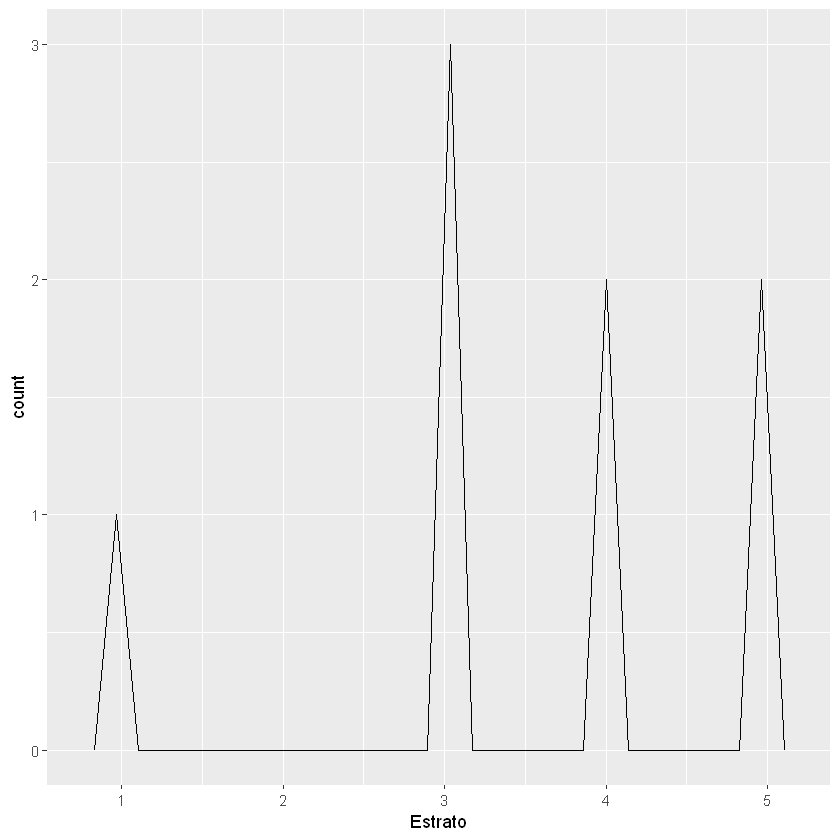

ggplot2¶

ggplot2¶
ggplot2 es un paquete con un gran conjunto de funciones con el fin
de realizar gráficos. Solo admite datos del tipo data.frames
La forma en que se creó la librería es por medio de “capas”, cada capa
contiene una finalidad específica y el gráfico que queremos es la suma
de todas las capas. Esta librería es particular en cuanto a que las
capas se agregan con el signo +. El + puede ir antes de la
siguiente capa en la misma línea de código o al final de la línea de
código cuando queremos agregar la siguiente cada en el siguiente
renglón. No se puede empezar una línea de código con el +.
Las capas que más se usan son:
Data: Se indican cuál son los datos. Con esta capa no se logra ningún gráfico porque no se ha especificado lo que se quiere graficar. Esta primera capa es
ggplot(data)Aesthetics: Es la Estética del gráfico como color, tipos de puntos, tipos de líneas, etc. Esta capa se agrega con
+ aes(). Con sola esta capa y la anterior (Data) no se puede graficas porque no se ha especificado el tipo de gráfico que se desea, para eso está la siguiente capa.Geometries: En esta capa se indica qué se quiere hacer con Data y la Estética. Tiene muchos tipos de gráficos como de líneas, puntos, densidad, histogramas, mapas, etc. Esta capa se agrega con
+ geo_nombreFunción()Facets: Divide el plot en subplots.
+ facet_grid()o con+ facet_wrap()Statistics: Al mismo tiempo que se hace un gráfico se pueden mostrar algunos cálculos estadísticos.
Coordinates: Se pueden invertir los ejes del gráfico con
coord_flip
Código en R:¶
Instalar la librería: install.packages("tidyverse")
Alternativa: install.packages("ggplot2")
library(ggplot2)
Opcional: se puede inspeccionar la versión de la librería con
packageVersion()
packageVersion("ggplot2")
[1] '3.3.0'
Importar datos:
datos = read.csv("Datos.csv", sep = ";", dec = ",", header = T)
print(datos)
Nombre Edad Género Peso Estrato
1 Ángela 22 F 62.5 3
2 José 10 M 75.8 4
3 Juan 15 M 54.4 3
4 Manuela 35 F 73.6 3
5 Maribel 50 F 70.0 5
6 Antonio 45 M 180.0 4
7 Alicia 1 F 15.7 1
8 Luis 32 M 103.5 5
str(datos)
'data.frame': 8 obs. of 5 variables:
$ Nombre : Factor w/ 8 levels "Alicia","Ángela",..: 2 4 5 7 8 3 1 6
$ Edad : int 22 10 15 35 50 45 1 32
$ Género : Factor w/ 2 levels "F","M": 1 2 2 1 1 2 1 2
$ Peso : num 62.5 75.8 54.4 73.6 70 ...
$ Estrato: int 3 4 3 3 5 4 1 5
Data:¶
Con la capa de data solo se están cargando los datos a la librería
ggplot2. Con solo esta capa no se logra graficar, por esta razón, si
se corre el código no se hace un gráfico.
ggplot(data = datos)

Es común en esta librería crear un objeto p que almacene todas las
capas anteriores y que permita agregar más capas con el signo +
p <- ggplot(data = datos)
p
{kind=link}
Aesthetics:¶
Las principales estéticas de la capa aes() son:
x: para indicar el nombre de la columna para el eje \(X\).y: para indicar el nombre de la columna para el eje \(y\).colour: color.size: tamaño.shape: formas de los puntos o líneas.alpha: para trasparencias. Se usa cuando se superpone varios tipos de gráfico. Entre más cercano a uno, más opaco el gráfico y entre más cercano a cero, más transparente.fill: color de relleno.
shape:

shape¶
ggplot(data = datos) + aes(X = Edad, y = Peso)
{kind=link}
Es común ver que la capa aes() es agregada dentro de la función
inicial ggplot(data, aes()) o dentro de la capa Geometries
geo_nombreFuncion(mapping = aes())
p <- ggplot(data = datos) + aes(x = Edad, y = Peso)
p
{kind=link}
Geometries:¶
Al agregar esta capa sí se muestra un gráfico porque se está indicando qué debe graficar con los datos ingresados y las estéticas definidas.
Algunos gráficos son:
Gráficos de dos variables:
geom_point()
geom_line()
geom_area()
geom_quantile()
geom_smooth()
Gráficos de una variable:
geom_histogram()
geom_freqpoly()
geom_density()
geom_area()
geom_bar()
geom_qq()
geom_col()
geom_boxplot()
geom_violin()
Gráficos de dos variables:
p <- ggplot(data = datos) + aes(x = Edad, y = Peso)
p + geom_point()

p + geom_line()
{kind=link}
p + geom_area()

Gráficos de una variable:
p <- ggplot(data = datos) + aes(x = Estrato)
p + geom_histogram()
stat_bin() using bins = 30. Pick better value with binwidth.
{kind=link}
p + geom_freqpoly()
stat_bin() using bins = 30. Pick better value with binwidth.
{kind=link}
p + geom_density()
{kind=link}
p + geom_boxplot()
{kind=link}
p + geom_bar()
{kind=link}
Para cambiar la orientación se hace en aes() indicando solo y
ggplot(data = datos) + aes(y = Estrato) +
geom_bar()
{kind=link}
Cambiando Aesthetics:¶
Los datos en aes() se pueden agregar en cada capa en lugar de
incluirlos al principio por separado así:
geo_nombreFunción(aes())
Tamaño de los puntos y líneas:
Con size se pueden cambiar el tamaño de todos los puntos y líneas al
mismo tiempo si se agrega este argumento por fuera de la función
aes()
ggplot(data = datos) +
geom_point(aes(x = Edad, y = Peso), size = 10)
{kind=link}
Si se agrega la función sizepor dentro de aes() se pueden
hacer una clasificación de los datos en función de una variable. Esta
clasificación se hace cambiando el tamaño de los puntos.
size = variable - Variable para clasificar los datos.
ggplot(data = datos) +
geom_point(aes(x = Edad, y = Peso, size = Estrato))
{kind=link}
ggplot(data = datos) +
geom_line(aes(x = Edad, y = Peso, size = Estrato))
{kind=link}
Color:
Con color, colour o col se agregan colores clasificando los
datos en una variable si este argumento se pone dentro de la función
aes(). Por ejemplo, los datos de Edad y Peso serán clasificados por
Género y cada Género tendrá un color diferente.
Si el color va por fuera de aes(), los datos no se clasifican,
solo cambian de color todos los puntos o líneas.
ggplot(data = datos) +
aes(x = Edad, y = Peso, color = Género) +
geom_point(size = 5)

ggplot(data = datos) +
aes(x = Edad, y = Peso, color = Nombre) +
geom_point(size = 5)

ggplot(data = datos) +
geom_line(aes(x = Edad, y = Peso, color = Estrato))
{kind=link}
ggplot(data = datos) +
geom_bar(aes(x = Estrato, color = Género))

ggplot(data = datos) +
geom_bar(aes(x = Estrato, fill = Género))
{kind=link}
Note que aparecen unos colores por defecto, pero podemos crear nuestra propia paleta de colores e ingresarlos manualmente.
Cuando clasificamos los datos por colores podemos cambiar los colores que la librería muestra por defecto.
Primero, se crea una variable con los colores:
colores <- c("darkgreen", "darkblue").
Luego, se agregan en el gráfico como una capa adicional así:
+ scale_color_manual(values = colores)
colores <- c("darkgreen", "darkblue")
ggplot(data = datos) +
aes(x = Edad, y = Peso, color = Género) +
geom_point(size = 5) +
scale_color_manual(values = colores)

Tipos Líneas:
Se usa el argumento linetype igual a un número y por fuera de
aes()
ggplot(data = datos) +
geom_line(aes(x = Edad, y = Peso), linetype = 2, size = 1)

ggplot(data = datos) +
geom_line(aes(x = Edad, y = Peso), linetype = 10, size = 2)
{kind=link}
Forma de los puntos:
Con shape se pueden cambiar todos los puntos al mismo tiempo si se
agrega este argumento por fuera de la función aes()
ggplot(data = datos) +
geom_point(aes(x = Edad, y = Peso), shape = 10, size = 10)
{kind=link}
Si se agrega la función shapepor dentro de aes() se pueden
hacer una clasificación de los datos en función de una variable
cambiando la forma de los puntos o líneas.
shape = variable - Se pone la variable para clasificar los datos.
ggplot(data = datos) +
geom_point(aes(x = Edad, y = Peso, shape = Género), size = 5)

Transparencias:
alpha - Entre más cercano a uno, más opaco el gráfico y entre más
cercano a cero, más transparente.
El siguiente ejemplo tiene dos gráficos superpuestos, con los valores
que se dan en alpha se puede visualizar el gráfico del atrás.
ggplot(data = datos) +
geom_histogram(aes(x = Peso),
color = "black", # Color del borde.
fill = "darkred", # Color del rectángulo.
bins = 10,
alpha = 0.6) + # Transparencia de 0,6.
geom_histogram(aes(x = Edad),
color = "black",
fill = "darkblue",
bins = 10,
alpha = 0.3) # Transparencia de 0,3. Más transparente que el anterior.

ggplot(data = datos) +
geom_density(aes(x = Peso),
color = "darkred", # Color del borde.
fill = "darkred", # Color del rectángulo.
alpha = 0.5) + # Transparencia de 0,6.
geom_density(aes(x = Edad),
color = "darkblue",
fill = "darkblue",
alpha = 0.5) # Transparencia de 0,3. Más transparente que el anterior.
{kind=link}
Facets:¶
Para crear subplots clasificando los datos.
``facet_wrap()``:
Para clasificar en función de variables discretas. Se crean varios gráficos para clasificar los datos.
facet_wrap(~ nombre variable)
ggplot(data = datos) +
geom_point(aes(x = Edad, y = Peso), size = 5) +
facet_wrap(~ Género) # Divide el gráfico en función del Género

ggplot(data = datos) +
geom_point(aes(x = Edad, y = Peso), size = 5) +
facet_wrap(~ Género, nrow = 2) # nrow = para cantidad de filas
{kind=link}
ggplot(data = datos) +
geom_point(aes(x = Edad, y = Peso), size = 5) +
facet_wrap(~ Estrato) # Divide el gráfico en función del Estrato

ggplot(data = datos) +
geom_point(aes(x = Edad, y = Peso), size = 5) +
facet_wrap(~ Estrato, ncol = 4) # ncol = para cantidad de columnas
{kind=link}
En el siguiente gráfico se usa facet_wrap() para clasificar los
datos por Estrato en cada subplot y al mismo tiempo se clasifican por
Género al cambiar el color agregando color = Género dentro de
aes()
ggplot(data = datos) +
geom_point(aes(x = Edad, y = Peso, color = Género), size = 5) +
facet_wrap(~ Estrato, ncol = 4) # ncol = para cantidad de columnas

``facet_grid()``:
Crea subplots para clasificar los datos en una o dos variables.
facet_grid(nombre variable 1 ~ nombre variable 2)
facet_grid(y ~ X)
nombre variable 1: clasificación vertical.nombre variable 2: clasificación horizontal.
Con dos variables:
ggplot(data = datos) +
geom_point(aes(x = Edad, y = Peso), size = 5) +
facet_grid(Género ~ Estrato) # Género (y) - vertical y Estrato (X) - horizontal.
{kind=link}
Con una sola variable:
Para omitir una variable se reemplaza por un punto .
ggplot(data = datos) +
geom_point(aes(x = Edad, y = Peso), size = 5) +
facet_grid(Género ~ .)
{kind=link}
ggplot(data = datos) +
geom_point(aes(x = Edad, y = Peso), size = 5) +
facet_grid(. ~ Género) # Cambia la posición al cambiar la variable

Combinar gráficos:
ggplot(data = datos) +
geom_point(aes(x = Estrato, y = Peso),
size = 7,
shape = 25,
fill = "darkgray") +
geom_line(aes(x = Estrato, y = Edad),
linetype = 5,
color = "darkred",
lwd = 2)
{kind=link}
Statistics:¶
Con la librería ggplot2 se pueden hacer cálculos estadísticos y
representarlos gráficamente. Algunas funciones empiezan con
stat_nombre Función()
Primero, un gráfico con los datos:
ggplot(data = datos) + aes(x = Estrato, y = Peso) +
geom_point(size = 3)

Segundo, con el siguiente gráfico se calculará el promedio por cada Estrato.
Se utiliza la función stat_summary(), el promedio se especifica con
fun = mean
ggplot(data = datos) + aes(x = Estrato, y = Peso) +
stat_summary(fun = mean, geom = "point", color = "red", size = 3)
{kind=link}
El siguiente gráfico muestra los datos en color negro y el promedio por Estrato en color rojo.
ggplot(data = datos) + aes(x = Estrato, y = Peso) +
geom_point(size = 3) +
stat_summary(fun = "mean", geom = "point", color = "red", size = 3)

El siguiente gráfico muestra los promedios por Estrato, pero en una línea roja.
ggplot(data = datos) + aes(x = Estrato, y = Peso) +
geom_point(size = 3) +
stat_summary(fun = "mean", geom = "line", color = "red", size = 1)
{kind=link}
Uso de los argumentos fun.min y fun.max:
Se muestra el promedio por Estrato, el máximo y el mínimo.
ggplot(data = datos) + aes(x = Estrato, y = Peso) +
stat_summary(fun = mean, fun.min = min, fun.max = max, color = "red", size = 1)

Proporciones:
Para mostrar proporciones, se agrega el siguiente argumento dentro de la
función geom_bar():
y = ..prop..
Por defecto, el resultado que muestra es de conteo, y = ..count..
ggplot(data = datos) +
geom_bar(aes(x = Estrato, y = ..prop..))
{kind=link}
Las demás funciones estadísticas también están por defecto en los gráficos.
Coordinates:¶
Se usa la función coord_flip para cambiar los ejes, es decir, girar
el gráfico.
ggplot(data = datos) +
geom_bar(aes(x = Estrato, y = ..prop..)) +
coord_flip()
{kind=link}
Theme:¶
El siguiente gráfico tiene el tema por defecto que es el tema
theme_gray.
Fondo gris y líneas de cuadrícula blancas, diseñado para presentar los datos y facilitar las comparaciones.
ggplot(data = datos) +
geom_point(aes(x = Edad, y = Peso, color = Género), size = 5) +
facet_wrap(~ Estrato)

theme_bw:
Classic dark-on-light. Para usarse en proyectores.
ggplot(data = datos) +
geom_point(aes(x = Edad, y = Peso, color = Género), size = 5) +
facet_wrap(~ Estrato) +
theme_bw()

theme_linedraw:
Fondo blanco con líneas negras.
ggplot(data = datos) +
geom_point(aes(x = Edad, y = Peso, color = Género), size = 5) +
facet_wrap(~ Estrato) +
theme_linedraw()
{kind=link}
theme_light:
Simular al anterior, theme_linedraw
ggplot(data = datos) +
geom_point(aes(x = Edad, y = Peso, color = Género), size = 5) +
facet_wrap(~ Estrato) +
theme_light()
{kind=link}
theme_dark:
Similar al anterior, theme_light, pero con fondo oscuro. Ideal para
resaltar líneas finas de color.
ggplot(data = datos) +
geom_point(aes(x = Edad, y = Peso, color = Género), size = 5) +
facet_wrap(~ Estrato) +
theme_dark()

theme_minimal:
ggplot(data = datos) +
geom_point(aes(x = Edad, y = Peso, color = Género), size = 5) +
facet_wrap(~ Estrato) +
theme_minimal()
{kind=link}
theme_classic:
Sin líneas de cuadrícula.
ggplot(data = datos) +
geom_point(aes(x = Edad, y = Peso, color = Género), size = 5) +
facet_wrap(~ Estrato) +
theme_classic()

theme_void:
Vacío
ggplot(data = datos) +
geom_point(aes(x = Edad, y = Peso, color = Género), size = 5) +
facet_wrap(~ Estrato) +
theme_void()

theme_test:
ggplot(data = datos) +
geom_point(aes(x = Edad, y = Peso, color = Género), size = 5) +
facet_wrap(~ Estrato) +
theme_test()

Títulos y etiquetas:¶
Los títulos y las etiquetas se agregan con labs().
Argumentos de labs():
title - Título
subtitle - Subtítulo
caption - Viñeta
x - Nombre eje \(X\)
y - Nombre eje \(y\)
fill - Nombre de la leyenda de códigos de colores creados con
fill =
color - Nombre de la leyenda de códigos de colores creados con
color =
shape - Nombre de la leyenda de simbología creada con shape =
ggplot(data = datos) +
geom_point(aes(x = Edad, y = Peso, color = Nombre, shape = Género), size = 4) +
facet_wrap(~ Estrato) +
theme_minimal() +
labs(title = "Peso vs. Edad",
subtitle = "Clasificación por Género, Estrato y Nombre",
caption = "Fuente: Elaboración propia",
x = "Edad",
y = "Peso",
shape = "Género con \n formas diferentes", # Se personaliza la leyenda de Género
color = "Cada nombre \n con un color") # Se personaliza la leyenda de Nombre
{kind=link}
Extraer los gráficos:¶
Los gráficos se pueden extraer con la función
ggsave("Nombre.extensión")
Por defecto extrae el último gráfico.
Formatos: “eps”, “ps”, “tex” (pictex), “pdf”, “jpeg”, “tiff”, “png”, “bmp”, “svg”
ggsave("Guardado.png")
Saving 6.67 x 6.67 in image